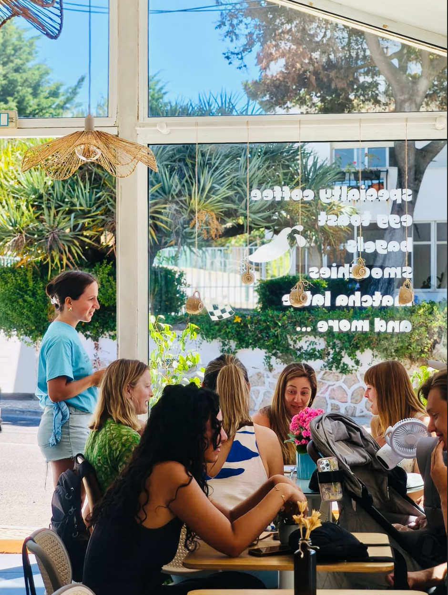
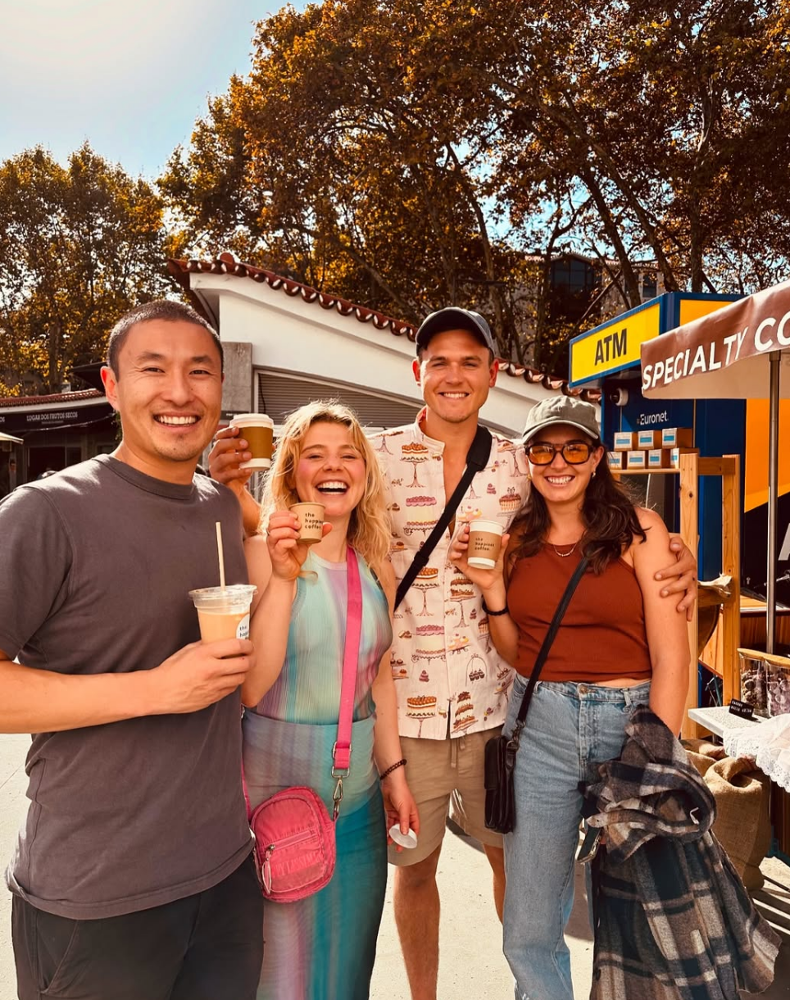
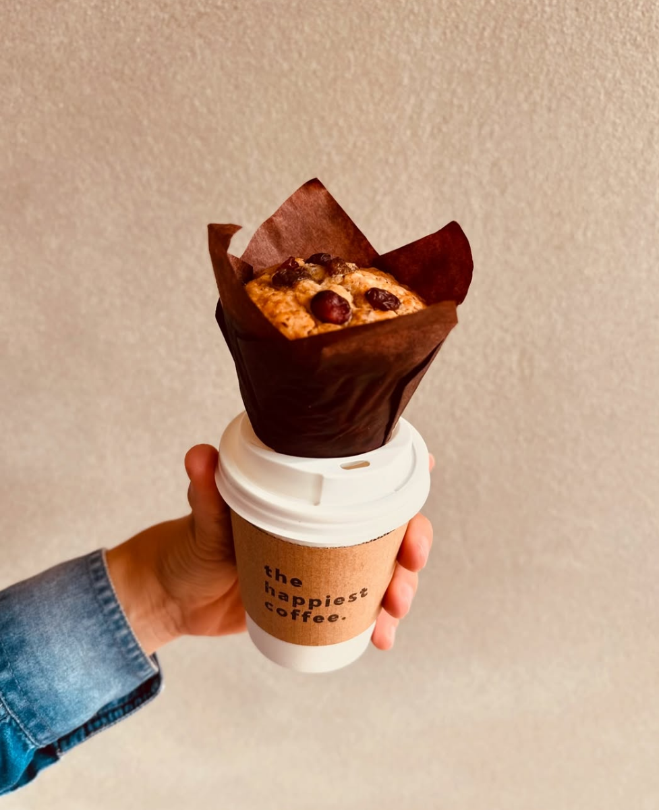
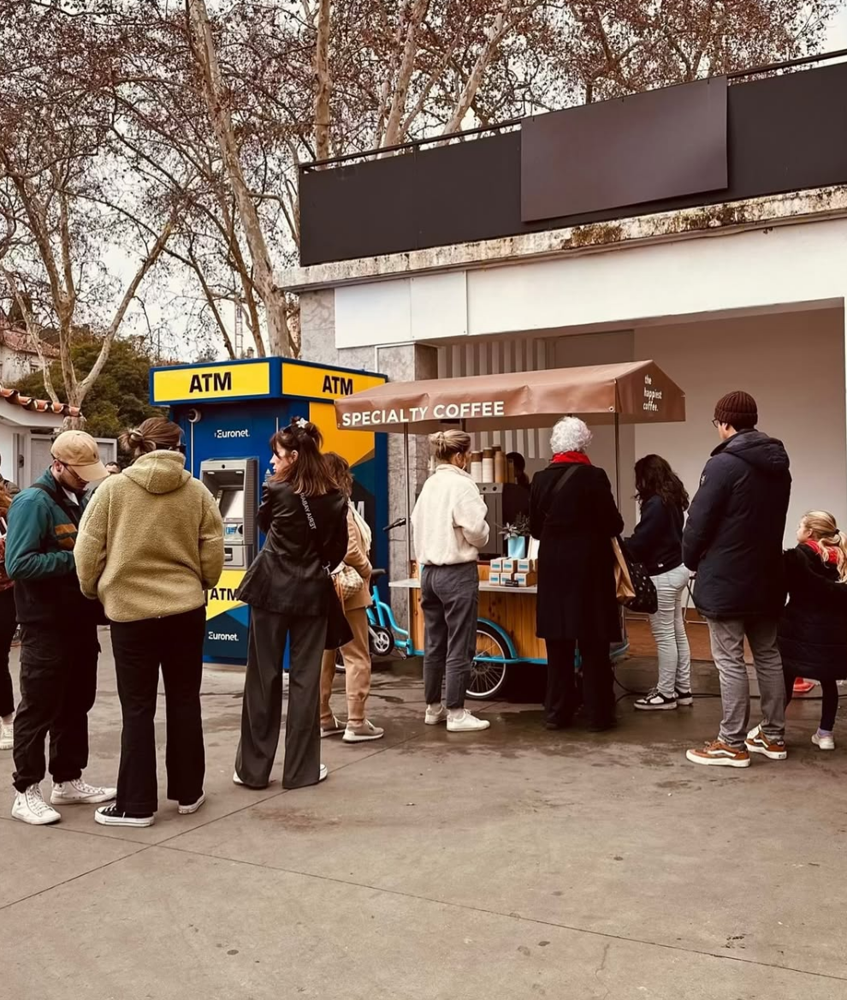
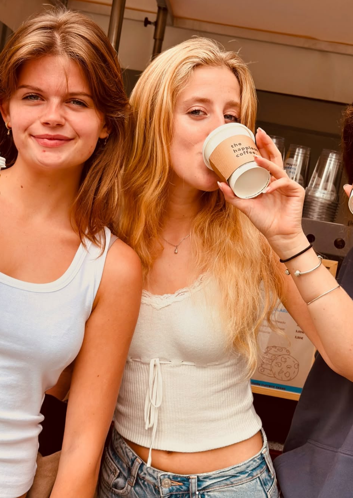

A Nossa História
Nascemos da vontade de comer bem, sem hora marcada. Em Cascais, o Mâide é mais do que um restaurante — é o espaço onde o pequeno-almoço de manhã dá lugar a uma cozinha de inspiração asiática e mundial ao longo do dia. Acreditamos que a boa comida não deve estar presa a horários rígidos: por isso, a casa abre às 09h30 com brunch e, a partir das 12h30, o menu viaja pelo mundo. O nosso espaço foi desenhado para ser descontraído, quer venhas para um pequeno-almoço com tempo, um almoço de trabalho ou um jantar diferente. Aqui come-se bem a qualquer hora do dia.
O Nosso Espaço
Um lugar descontraído para qualquer hora do dia.


Segue-nos no Instagram para veres as novidades do menu e o que se passa no Mâide.
Seguir no InstagramDa Manhã à Noite
O fator diferenciador: um menu que muda ao longo do dia.
09h30
Abertura com pequeno-almoço e brunch — ovos, panquecas, tostas e bagels.
12h30
O menu muda: entram os pratos de inspiração asiática e do mundo.
Tarde
Poké, ceviche e tataki, feitos na hora.
Noite
Nasi goreng, caril japonês e os pratos do mundo até fechar.